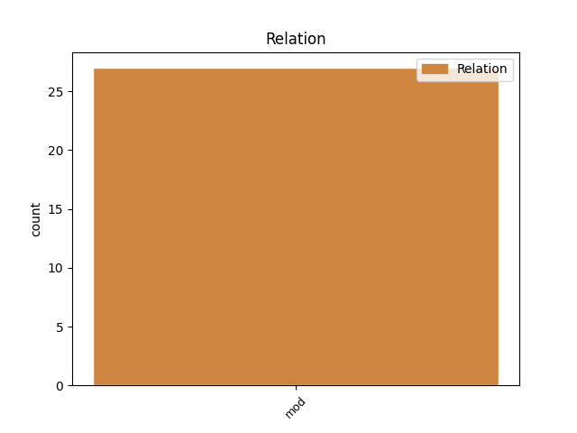
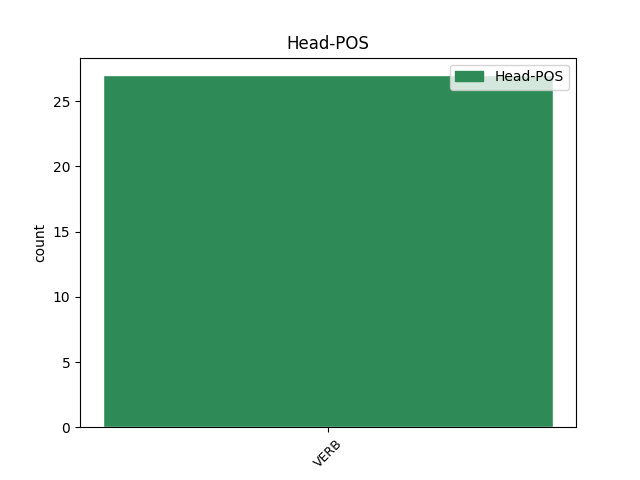
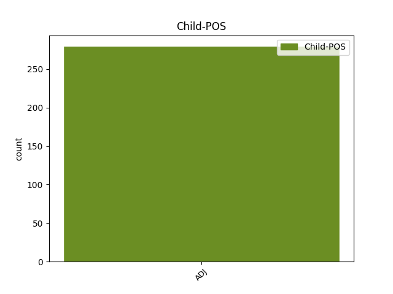

Distribution of features within this leaf



Agreement Rules sorted by frequency.
- When the dependent token is the modifer(mod) of the head token, and the head token is VERB and the dependent token is ADJ.
1 ἐγὼ _ _ _ _ 0 _ _ _
2 δὲ _ _ _ _ 0 _ _ _
3 λαοὺς _ _ _ _ 0 _ _ _
4 συγκαλῶν συγκαλέω VERB v-sppamn- Case=Nom|Gender=Masc|Number=Sing|Tense=Pres|VerbForm=Part|Voice=Act 0 _ _ _
5 ἐγχωρίους ἐγχώριος ADJ a-p---ma- Case=Acc|Gender=Masc|Number=Plur 4 mod _ _
6 στείχω _ _ _ _ 0 _ _ _
7 , _ _ _ _ 0 _ _ _
8 τὸ _ _ _ _ 0 _ _ _
9 κοινὸν _ _ _ _ 0 _ _ _
10 ὡς _ _ _ _ 0 _ _ _
11 ἂν _ _ _ _ 0 _ _ _
12 εὐμενὲς _ _ _ _ 0 _ _ _
13 τιθῶ _ _ _ _ 0 _ _ _
14 · _ _ _ _ 0 _ _ _
Disagree Examples:
1 ὅστις _ _ _ _ 0 _ _ _
2 δ̓ _ _ _ _ 0 _ _ _
3 Ἔρωτα _ _ _ _ 0 _ _ _
4 μὴ _ _ _ _ 0 _ _ _
5 μέγαν _ _ _ _ 0 _ _ _
6 κρίνει _ _ _ _ 0 _ _ _
7 θεόν _ _ _ _ 0 _ _ _
8 , _ _ _ _ 0 _ _ _
9 ἢ _ _ _ _ 0 _ _ _
10 σκαιός _ _ _ _ 0 _ _ _
11 ἐστιν _ _ _ _ 0 _ _ _
12 ἢ _ _ _ _ 0 _ _ _
13 καλῶν καλός ADJ a-p---ng- Case=Gen|Gender=Neut|Number=Plur 15 mod _ _
14 ἄπειρος _ _ _ _ 0 _ _ _
15 ὢν εἰμί VERB v-sppamn- Case=Nom|Gender=Masc|Number=Sing|Tense=Pres|VerbForm=Part|Voice=Act 0 _ _ _
16 οὐκ _ _ _ _ 0 _ _ _
17 οἶδε _ _ _ _ 0 _ _ _
18 τὸν _ _ _ _ 0 _ _ _
19 μέγιστον _ _ _ _ 0 _ _ _
20 ἀνθρώποις _ _ _ _ 0 _ _ _
21 θεόν _ _ _ _ 0 _ _ _
22 . _ _ _ _ 0 _ _ _
1 ἔτι _ _ _ _ 0 _ _ _
2 πολὺ πολύς ADJ a-s---na- Case=Acc|Gender=Neut|Number=Sing 4 mod _ _
3 μᾶλλον _ _ _ _ 0 _ _ _
4 ἐρυθριάσαντος ἐρυθριάω VERB v-sapamg- Case=Gen|Gender=Masc|Number=Sing|Tense=Past|VerbForm=Part|Voice=Act 0 _ _ _
5 τοῦ _ _ _ _ 0 _ _ _
6 παιδὸς _ _ _ _ 0 _ _ _
7 εἶπε _ _ _ _ 0 _ _ _
8 πρὸς _ _ _ _ 0 _ _ _
9 τὸν _ _ _ _ 0 _ _ _
10 συγκατακείμενον _ _ _ _ 0 _ _ _
11 · _ _ _ _ 0 _ _ _
1 καὶ _ _ _ _ 0 _ _ _
2 τῶν _ _ _ _ 0 _ _ _
3 ἀνθρώπων _ _ _ _ 0 _ _ _
4 ὕστερον ὕστερος ADJ a-s---na- Case=Acc|Gender=Neut|Number=Sing 5 mod _ _
5 ἀναζητούντων ἀναζητέω VERB v-pppamg- Case=Gen|Gender=Masc|Number=Plur|Tense=Pres|VerbForm=Part|Voice=Act 0 _ _ _
6 τὴν _ _ _ _ 0 _ _ _
7 αἰτίαν _ _ _ _ 0 _ _ _
8 εὑρέθη _ _ _ _ 0 _ _ _
9 διὰ _ _ _ _ 0 _ _ _
10 τὸν _ _ _ _ 0 _ _ _
11 τοῦ _ _ _ _ 0 _ _ _
12 θεοῦ _ _ _ _ 0 _ _ _
13 στέφανον _ _ _ _ 0 _ _ _
14 ἀνῃρημένη _ _ _ _ 0 _ _ _
15 . _ _ _ _ 0 _ _ _
1 εἶθ̓ _ _ _ _ 0 _ _ _
2 ὕστερον _ _ _ _ 0 _ _ _
3 πωλουμένης _ _ _ _ 0 _ _ _
4 τῆς _ _ _ _ 0 _ _ _
5 αὐλητρίδος _ _ _ _ 0 _ _ _
6 , _ _ _ _ 0 _ _ _
7 καθάπερ _ _ _ _ 0 _ _ _
8 ἔθος _ _ _ _ 0 _ _ _
9 ἐστὶν _ _ _ _ 0 _ _ _
10 ἐν _ _ _ _ 0 _ _ _
11 τοῖς _ _ _ _ 0 _ _ _
12 πότοις _ _ _ _ 0 _ _ _
13 γίνεσθαι _ _ _ _ 0 _ _ _
14 , _ _ _ _ 0 _ _ _
15 ἐν _ _ _ _ 0 _ _ _
16 τῷ _ _ _ _ 0 _ _ _
17 ἀγοράζειν _ _ _ _ 0 _ _ _
18 πάνυ _ _ _ _ 0 _ _ _
19 νεανικὸς _ _ _ _ 0 _ _ _
20 ἦν _ _ _ _ 0 _ _ _
21 καὶ _ _ _ _ 0 _ _ _
22 τῷ _ _ _ _ 0 _ _ _
23 πωλοῦντι _ _ _ _ 0 _ _ _
24 , _ _ _ _ 0 _ _ _
25 ἄλλῳ _ _ _ _ 0 _ _ _
26 τινὶ _ _ _ _ 0 _ _ _
27 θᾶττον ταχύς ADJ a-s---nac Case=Acc|Degree=Cmp|Gender=Neut|Number=Sing 28 mod _ _
28 προσθέντι προστίθημι VERB v-sapamd- Case=Dat|Gender=Masc|Number=Sing|Tense=Past|VerbForm=Part|Voice=Act 0 _ _ _
29 , _ _ _ _ 0 _ _ _
30 ἡμφισβήτει _ _ _ _ 0 _ _ _
31 καὶ _ _ _ _ 0 _ _ _
32 οὐκ _ _ _ _ 0 _ _ _
33 ἔφη _ _ _ _ 0 _ _ _
34 αὐτὸν _ _ _ _ 0 _ _ _
35 πεπρακέναι _ _ _ _ 0 _ _ _
36 · _ _ _ _ 0 _ _ _
1 ἐγὼ _ _ _ _ 0 _ _ _
2 δὲ _ _ _ _ 0 _ _ _
3 θυμοῦσθαι _ _ _ _ 0 _ _ _
4 μὲν _ _ _ _ 0 _ _ _
5 οὐκ _ _ _ _ 0 _ _ _
6 ἐπίσταμαι _ _ _ _ 0 _ _ _
7 νοσοῦντι νοσέω VERB v-sppamd- Case=Dat|Gender=Masc|Number=Sing|Tense=Pres|VerbForm=Part|Voice=Act 0 _ _ _
8 κείνῳ _ _ _ _ 0 _ _ _
9 πολλὰ πολύς ADJ a-p---na- Case=Acc|Gender=Neut|Number=Plur 7 mod _ _
10 τῇδε _ _ _ _ 0 _ _ _
11 τῇ _ _ _ _ 0 _ _ _
12 νόσῳ _ _ _ _ 0 _ _ _
13 · _ _ _ _ 0 _ _ _